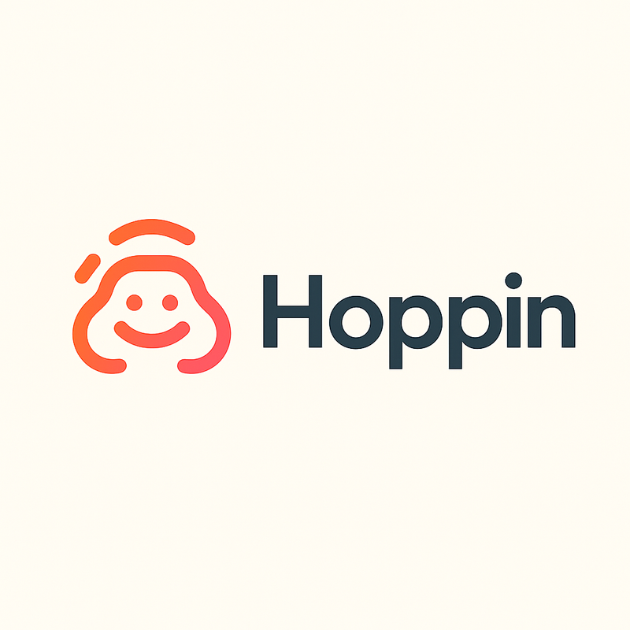
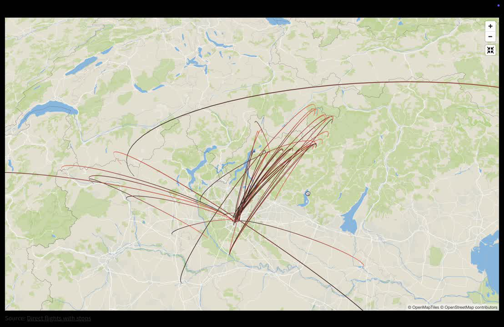
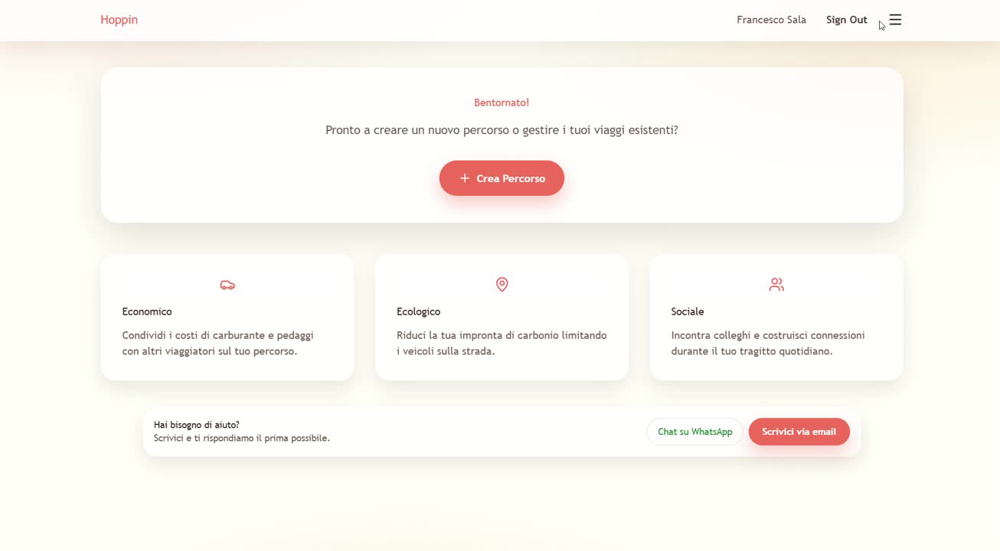
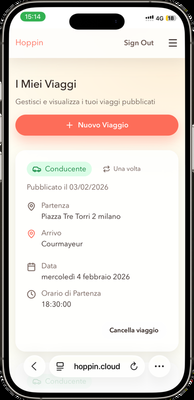

Entrepreneurial Challenge
Build a carpooling experience that creates enough local matching density and delivers clearer value than the WhatsApp groups already used by weekly suburban commuters.
Entrepreneurship · Product Validation
From a mobility hypothesis to a live MVP and a €2,000 TEF validation grant
A community-first platform designed to help weekly commuters find verified people travelling along the same routes and coordinate recurring shared rides.

Build a carpooling experience that creates enough local matching density and delivers clearer value than the WhatsApp groups already used by weekly suburban commuters.
Problem & Pivot
Hoppin began with daily commuters in the Milan metropolitan area, assuming that congestion, private-car costs and poor public transport would be strong enough to drive adoption of a dedicated carpooling app.
Research and early behavior challenged that framing. Daily commuting was often treated as a fixed routine, users were highly price-sensitive, and existing WhatsApp groups offered a familiar, flexible coordination flow that a new platform had to outperform immediately.
The project therefore pivoted toward weekly commuters travelling from underserved suburban or semi-rural areas. Hoppin became a community-first coordination layer focused on specific corridors and time windows, where trust, simplicity and local route density matter more than a broad open marketplace.
Research & Validation
User Discovery
Industry Research
MVP Launch & Iteration
MVP 1 · Valtellina–Milan
Target Test · Milan–Bergamo
MVP 2 · Visible Trips

Key Learning
Web Product
The website supported account access, route creation and trip management. Users could specify whether they were drivers, passengers or both, define time flexibility and create one-off, weekly or custom recurring journeys.
The second MVP exposed available trips and enabled direct WhatsApp contact. This removed the team as a matching intermediary and aligned the digital product more closely with the behavior users already trusted.

Trip Discovery

Trip Management
Early Traction
Community Reach
Potential users reached through existing commuter communities.
Website Visits
Visits generated without paid advertising campaigns.
Sign-ups
Users registered across the MVP validation funnel.
Routes Entered
Recurring routes created, with 20+ direct user contacts.
Outcome
The TEF validation grant provided funding to continue testing the concept, develop the MVP and gather stronger evidence around adoption, matching density and repeat use.
More importantly, the project produced a validated learning system: market analysis defined the risks, interviews challenged assumptions, MVP launches exposed actual behavior, and the product evolved around the constraints observed in real commuter communities.
Methods & Skills